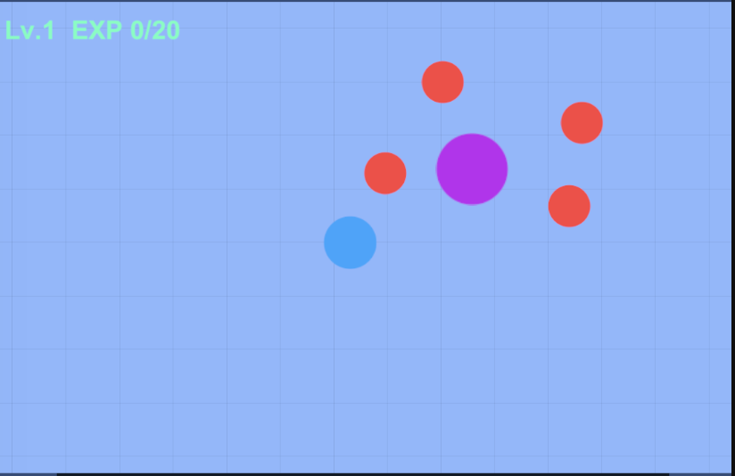
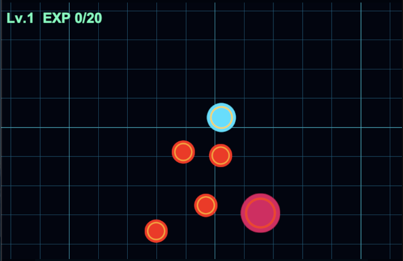
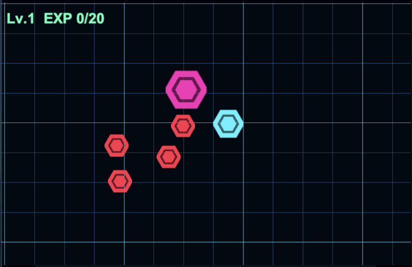
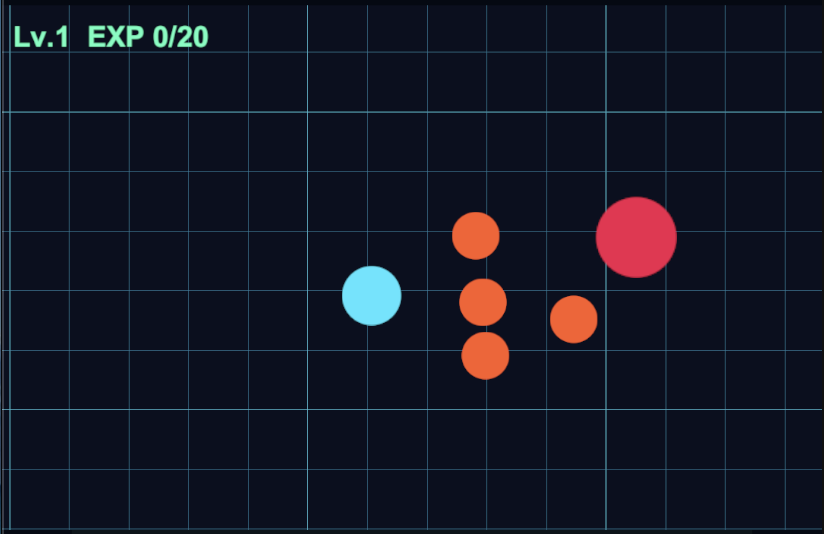

변경 전
우주 SF 테마 적용 전 기존 전투 화면

PNG 이미지 슬롯
변경 전 전투 화면 이미지를 추가하세요.
assets/2026/09/05/before-space-sf-theme.png
Before · Space SF Theme 적용 전
기존 전투 화면을 우주 SF 전술 전장으로 바꾸는 동일한 작업을 Codex GPT-5.6 Sol xhigh, Codex GPT-5.6 Terra high, Qwen3.8-27B에 각각 맡겼다. 바닥 그리드, 전장 색상, 유닛 표현, UI 가독성처럼 눈으로 판단해야 하는 작업에서 모델마다 구현 속도와 디자인 선택, 검증 방식이 어떻게 달라지는지 확인했다.
전투 로직은 그대로 유지하면서 현재 프로토타입의 화면을 어두운 우주 SF 전장으로 바꾸는 것이 목표였다. 같은 요구사항을 서로 다른 모델에 독립적으로 수행시켜 단순 코드 생성이 아니라 비주얼 해석, Unity 애셋 수정, 런타임 검증까지 포함한 작업 완성도를 비교했다.
자동 테스트 PASS만으로 판단하지 않고 실제 Game View에서 SF 분위기, 유닛 구분, 화면 가독성, 디자인 선호도를 함께 확인했다.
어두운 금속성 전장 위에 밝기가 다른 minor / major grid를 사용해 전술 맵 같은 공간감을 만든다.
아군은 cyan·blue 계열, 적군은 orange·red 계열로 구성해 작은 모바일 화면에서도 즉시 팀을 구분한다.
새로운 대형 아트 파이프라인을 만들기보다 기존 프로토타입 구조와 절차적 비주얼을 활용해 빠르게 방향을 확인한다.
첫 번째 실행에서는 비주얼 변경뿐 아니라 실제 렌더 검증까지 상당히 강하게 수행했다.
fresh session에서 같은 작업을 다시 수행했다. 변경 규모는 더 작았지만 시각적으로는 가장 선호하는 결과가 나왔다.
원형 placeholder를 그대로 다듬는 대신 geometric hex-core tactical marker로 바꿨다. 이 선택 덕분에 단순 placeholder보다는 미래형 전술 인터페이스나 holographic unit marker에 가까운 인상이 생겼고, 실제 화면 비교에서도 가장 마음에 드는 방향이었다.
로컬 RTX 5090에서 동일 작업을 수행했다. 속도는 크게 느렸지만 검증 과정에서 실제 렌더링 문제를 스스로 발견하고 수정해 정상 결과까지 도달했다.
dark deck, minor / major grid, border를 네 개의 runtime material로 구성하고 아군·Hero·Enemy·Boss의 컬러 팔레트를 새 SF 테마에 맞게 조정했다.
Play Mode 장면을 1080×1920으로 캡처하고 floor grid, combatant color, camera 상태를 로그로 확인하는 임시 검증 코드를 만들었다.
Mesh.SetIndices의 submesh 인수에 panel / line count를 전달해
deck만 렌더되고 Submesh index is out of bounds가 발생하는 문제를 발견했다.
subMeshCount = 4와 absolute index 생성 방식으로 수정했다.
4개 submesh의 유효 index와 material count를 검사하는 회귀 테스트를 추가했고, 실제 1080×1920 캡처의 pixel color를 확인해 deck, grid, Hero, Enemy, Boss, HUD가 의도한 색으로 렌더되는지 검증했다. 임시 screenshot tooling은 최종 diff에서 모두 제거했다.
| 항목 | Codex Sol / xhigh | Codex Terra / high | Qwen3.8-27B / 128K |
|---|---|---|---|
| 작업 시간 | 18m 13s | 10m 37s | 55m 57s |
| 변경 규모 | 17 files · +430 / -37 | 13 files · +222 / -50 | 12 files · +353 / -52 |
| 자동 검증 | 274/274 + PlayMode render 1/1 | 격리 컴파일 PASS · 원본 batch test는 project lock 영향 | 277/277 + isolated Play Mode |
| 자가 복구 | 렌더 캡처 하네스 실패 복구 | 특별한 blocking issue 없음 | SubMesh 렌더 오류 발견·수정 |
| 비주얼 특징 | energy ring 중심의 안정적인 SF 표현 | hex-core tactical marker | 4-submesh grid와 강한 검증 중심 |
| 실제 화면 선호 | 좋음 | 최종 선호 방향 | 정상 동작 확인 |
Sol xhigh의 결과는 안정적이고 검증이 강했지만, 실제 디자인 선택에서는 Terra high가 만든 육각형 tactical marker 쪽을 더 선호했다.
fresh session에서 10분대에 눈에 띄는 테마 변경을 만들었고, 변경 규모도 세 실행 중 가장 작았다.
약 한 시간이 걸렸지만 로컬 환경에서 Codex 사용량을 소비하지 않고 실제 메시 오류를 스스로 수정해 최종 정상 결과에 도달했다.
비주얼 작업에서는 컴파일과 테스트가 모두 통과해도 그리드 밝기, 유닛 실루엣, 팀 컬러 대비 같은 요소는 실제 Game View에서 최종 판단해야 한다.
우주 SF 비주얼 방향을 기준으로, 다음 단계에서는 전투 중 플레이어가 내린 명령과 각 유닛의 현재 상태를 화면에서 즉시 읽을 수 있도록 전술 피드백 UI를 보강한다.
Hero에게 빈 공간 이동 명령을 내렸을 때 목적지에 cyan 계열의 홀로그램 마커를 표시한다. 새 이동 명령이 들어오면 기존 마커를 교체하고, Hero가 목적지에 도착하면 자연스럽게 사라지도록 한다.
Enemy 또는 Boss를 타겟으로 지정했을 때 현재 Hero가 공격하도록 명령받은 대상을 한눈에 확인할 수 있는 lock-on / targeting marker를 표시한다. 타겟 변경·사망·무효화 상태도 기존 명령 로직과 정확히 연동한다.
Hero, 아군 전투 유닛, 적군, Boss 위에 현재 HP를 확인할 수 있는 compact HP bar를 표시한다. 이동 중에도 유닛을 따라가고, 피격 즉시 갱신되며, 사망·제거 후에는 UI가 남지 않도록 처리한다.
개인적으로 GPT-5.6 Terra high의 육각형 스타일이 가장 마음에 든다.
우주 SF 테마 적용 전 기존 전투 화면

Energy ring 중심의 SF 전장

Hex-core tactical marker · 최종 선호 방향

로컬 LLM · 강한 검증 루프
